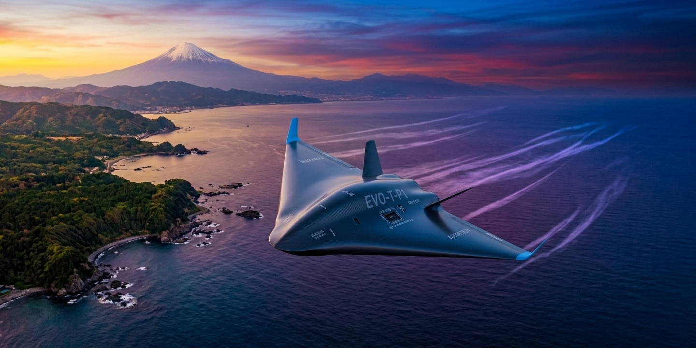

A blended-wing-body, jet-powered VTOL aircraft targeting about 600 km/h cruise with no runway and no dependence on GPS — engineered in Japan for emergency response and defence, where today's options fall short.
★ = Completed | ◎ = Design target / in progress | ○ = Planned (funding-dependent)

No aircraft today can take off vertically from an unprepared surface, cruise at jet speeds, and navigate autonomously without GPS.
| Capability | Helicopter | eVTOL (Joby / Archer) | Jet Aircraft | EVO-T |
|---|---|---|---|---|
| Top speed | ⚠ 250 km/h Rotor physics wall |
⚠ 250 km/h Battery limit |
✓ 800+ km/h Runway only |
600 km/h ◎ |
| Runway-free VTOL | ✓ Yes | ✓ Yes | ✗ No | ✓ Yes ◎ |
| GPS-denied autonomous ops | ✗ Pilot-dependent | ✗ GPS-required | ✗ GPS-required | ±2 cm target ◎ |
| EVO-T gap | 600 km/h cruise · Zero runway · GPS-denied navigation · Fully Autonomous (design targets) | |||
Each technology is co-designed with the others. The control software is tuned to this specific airframe, and the navigation system feeds the same state estimator that underpins it. Neither works at full capability without the other.
Flight control software that manages the handover from fan-borne to jet-borne flight on a statically unstable blended wing body. The static instability confirmed by CFD is the core engineering challenge.
Three-layer sensor fusion via Extended Kalman Filter. Natural surface feature signatures + semantic landmark detection + laser depth array. Zero pre-installed infrastructure required.
PBS-class microturbojets provide cruise thrust on the full-scale aircraft, and six electric ducted fans provide vertical lift. Off-the-shelf engine class, with no new engine development.
The three technologies are co-designed. No single component functions at full capability without the other two. The integration is the invention.
Without control software tuned to this airframe's instability, the aircraft is aerodynamically uncontrollable.
Tuned to specific aerodynamic coefficients validated by OpenFOAM CFD on EVO-T's geometry. No transferability to another airframe without repeating the full design loop.
Without integration as a position measurement in the flight controller's state estimator, it remains an instrument display — not a flight control input.
Requires the same iterative loop of CFD aerodynamic modelling → control design → sensor fusion → hardware-in-the-loop testing that Tokyo Dynamics has been executing since 2021. The aerodynamic model, control software and sensor fusion cannot be purchased or downloaded.
Emergency response comes first, then defence, with civil logistics and medical later, once flight records support certification. Defence scope is transport, reconnaissance and ground-robot deployment — no weapons.
When roads are cut and sea and air routes are limited by weather and terrain, as in the 2024 Noto earthquake. Expected customers: SDF (disaster relief), municipalities, fire services, police, Coast Guard.
Low-altitude, high-speed, GPS-independent flight, starting with island logistics support. Japan's Self-Defense Forces met only 51% of their FY2023 recruitment plan, a record low.
Time-critical medical supply and remote delivery, once flight records support civil certification.
Each phase is unlocked by the results, and the funding, of the one before it.
Blended wing body concept design. OpenFOAM CFD complete across configurations. Flight-control simulation running. ATLA proposal submitted. Company established.
★ Complete / ongoing4-fan bench fire test complete. 3D-printed 50 cm aircraft in build, fans going to six. Takeoff and landing tests from October; GPS-denied flight and fault-recovery tests from November.
◎ Building nowProcure PBS-class jet engines. Build a larger test aircraft to measure cruise thrust, low-altitude high-speed flight and real payload. Secure test fields and the permissions to use them.
◎ Funding-dependentFull-scale prototype tests begin in Q1 2028. Targets: about 600 km/h cruise, 500 km or more, payload of hundreds of kg. Certification groundwork with government and defence customers first.
○ Funding-dependentTokyo Dynamics owns and operates the fleet under 5–10 year service contracts: emergency response and defence first, civil logistics and medical later. Aircraft are taken back and recycled at end of life.
○ PlannedWe distinguish between what is proven, what is in progress, and what is a design target. Every claim here is backed by data or a formal submission.
OpenFOAM v2406 analysis of the sealed cruise configuration. Static pitch instability confirmed, which validates the need for active control. Further runs are planned.
★ Data AvailableFormal proposal submitted to the Acquisition, Technology & Logistics Agency.
★ SubmittedFour electric ducted fans run together on our own control software. All units normal.
★ CompleteArduPilot SITL + JSBSim simulation. Python control law implemented. Hover, fault and transition modes running in simulation. Hardware integration next.
◎ SIL Complete, HIL Next3D-printed airframe in build; fans going from four to six (motors on order). Takeoff and landing tests from October, GPS-denied flight and fault-recovery tests from November.
◎ Building NowWe own and operate the fleet. Customers sign long-term service contracts and get the mission capability, without carrying maintenance, approvals or disposal.
Biggest cost drivers: engine overhaul reserve (about 40%), fuel (about 15%), operations team (about 13%), aircraft depreciation (about 10%), maintenance (about 17%); insurance and recycling make up the rest.
Assumptions: 300 kg payload; 500 km at about 600 km/h; aircraft cost ¥80–150M, written off over 10 years; 250–500 flight hours per year; jet fuel ¥160/kg; engine overhaul every 100–200 hours; no onboard crew; end-of-life take-back included; ¥150 = $1. The low and high figures correspond to the best and worst case of these assumptions.
These are planning estimates from our own assumptions, not quotations. We will replace them with measured figures from flight tests.
Pricing and contract terms will be set with early customers.
Whether it comes as a grant, venture investment or a government programme, the funding serves one purpose: taking EVO-T from the 50 cm test aircraft to a full-scale prototype. The same plan supports all three applications — emergency response, defence and civil logistics.
Moving from proof on a 50 cm aircraft to flight with real engines and real payload.
A staged plan in which every phase is reported with measured results.
Three co-founders combining aerospace engineering, embedded AI systems and global market development. Seven years of shared working history.
MSc Materials & Energy Science, Science Tokyo. 6+ years in engineering and business development at DIGI/TERAOKA (mechatronics, robotics, aerospace). Leads vision, aerodynamic design, composite structures, CFD workflow and fundraising.
PhD candidate, Intelligent Systems, Osaka University; MSc Computer Science (CV & HCI). 5 years as Lead Robotics AI Engineer at Connected Robotics (FPGA, DSP, GPU embedded systems). Leads system architecture, real-time flight software, GPS-denied navigation and safety.
BA Arts Management & Japanese Studies, Ohio State University / International Christian University. 7+ years in international growth, strategy and cross-border business development. Leads commercialization, investor relations and go-to-market.